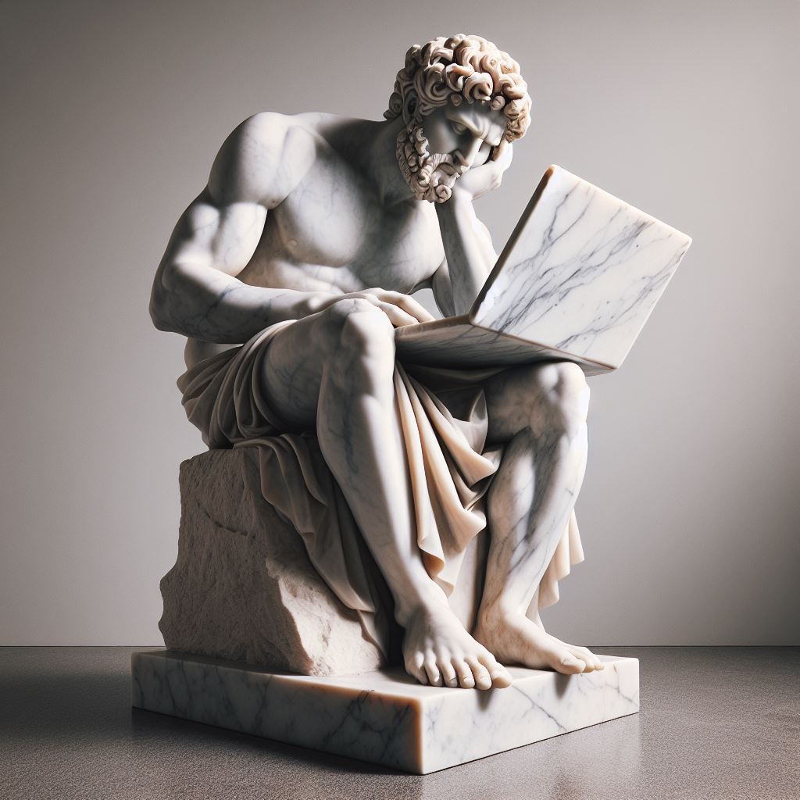

Why We Lose Our Spark: The Cure for Modern Emptiness
Very early in life, I noticed that most adults were worn out and unexcited about life. They seemed empty, tired – not quite sad but not quite happy either – aimless. They took their job because it happened to be available and spend their free time unconsciously doing whatever is easiest, casually drifting around and going through the motions. This might not necessarily be wrong, but I felt like life could be lived better than this.
It is no wonder then, that my heroes have been excited, ambitious, and highly directional people. I've collected and digested their various ways of being and have come to some conclusions that have helped me avoid (so far) being worn down by life. My aim is to share some stories that help explain why this happens, the problems it causes, and a better way of doing things.
To start, we have to go back in time to my tenth-grade year of high school.
—
I love to work, but gosh, I hated this work. It was 8 p.m. at Bill's Cost Plus Grocer, my minimum wage employer, as I shuffled cans and cookies and ketchup and countless other items around on the shelves.
The technical term for what I was doing is called fronting – the idea being to fill the holes of recently bought items by pulling the ones from the back of the shelves to the front for accessibility and neatness. The non-technical term is called throwing my life away.
To my left was a sweet old lady pulling a recently fronted item from the shelf. Mentally, I was giving her the bird.
There wasn't anything abnormal about this job that made me so angry and hate it so much, ya know, no awful boss or anything like that. It was so painful because there wasn't any growth in it. I wasn't directly helping people, becoming a better person, or learning something useful.
Frustratedly, I remember thinking, "We get beat down as kids into accepting that work has to suck and we have no control over our lives. In a few years, I'll be thoughtlessly and obediently collecting my pitiful check made out to 'Forgotten dreams', as I'm hurriedly off to clean poo off the toilets for the 1,296th day in a row."
Any parent's rebuttal to this is something like a shrug and muttering, "Well we all have to work," and/or "Stop being so lazy."
—
Mom and Dad were in the kitchen doing kitchen things on a Saturday when I asked them a question I thought was very important: "What would you do with your life if you didn't have to work? Ya know, if you had all the money and attention you wanted?"
Both answered with roughly the same thing: "I don't know? Relax? Do nothing?"
Obviously, they had never given this much thought which surprised me. After questioning many more adults, it was clear most people weren't thinking about this.
No wonder people sit down, shut up, go to work, and do what they are told.
—
I find it very interesting to think about what hunter-gatherer civilizations might have been like. Their whole day was probably spent getting food, shelter, and all the basic necessities most people take for granted today.
I wondered what they might say to the more general question I asked my parents, "What do you want to do with your life?" They probably wouldn't understand, look at me funny, and reply, "Survive? Don't die?" because that was probably all they had time for. This makes me feel grateful to be born now.
We are really lucky today because this is a unique point in history where the average person has the luxury to answer such a historically crazy question. The only problem is people are having a hard time with this; it is super hard to figure out what to do with our lives. Instead of doing the work to figure it out, I think adults get overwhelmed and unnecessarily throw themselves deeper into Bills-like work that they dislike or distract themselves with TV, TikTok, or other forms of entertainment that are easier than being bored.
Future generations will only have more freedom – more time to fill with their answer to the question or their lack thereof.
—
Thank goodness for the internet and books. That is where I found my heroes: Steve Jobs, Rick Rubin, Derek Sivers, Steven Pressfield, Elon Musk, Arnold Schwarzenegger, Mark Cuban, and David Goggins. These guys were the real deal and worth imitating. They had real energy and ambition about them.
For a long time, I never knew what about these people made them so inspiring because they include entrepreneurs, writers, a producer, a bodybuilder, and an ultra-runner. They all vary in what they do and why they do it, and only recently I figured out what they all have in common.
It isn't that they succeeded, got famous, or left a legacy; all that stuff is not important. It is that they figured out what they want. They decided to have a capital "P", Practice. This is not the traditional lowercase "p" practice but something new and similar to the word "job", but more importantly very different in a lot of ways.
Here is my best attempt at defining Practice.
—
A Practice is work we do for a deeper meaning than survival – something we would do regardless of whether it makes money.
A Practice is deadly serious and must be treated with respect and care.
A Practice is going to be uncomfortable and scary because it is meant to help us grow.
We show up to our Practice daily.
The reward of having a Practice is in the act itself not some external outcome or achievement.
A Practice is a top priority.
A Practice is using your total effort.
Having a Practice is your choice – something we do for ourselves.
The dedication to a Practice is often misunderstood or confusing to those around us.
The three pillars of life are physical health, relationships, and having a Practice.
—
We, as humans, were meant work but not sleepy stagnate Bills-like work. There is a much deeper meaning to be found in having a Practice that is conflated early on with Bills-like work, which feels bad and should be done only in the smallest amounts needed to survive. This conflation and negative orientation towards work as a whole leaves us feeling empty or overworked and, in each case, unexcited and tired.
This is a very new problem, only occurring recently due to the abundance of resources efficient technology has given us. The cure is to genuinely ask and try to answer the question: "What do I want to do with my life?" Nobody can specifically answer this for you, but the people I admire most have a general answer that has helped me: have a Practice. Having a Practice keeps our spark for life alive and makes the mundane interesting because the answers that could push us forward are everywhere if we wish to notice them.
The search for your Practice is long but just as exciting as having found your Practice, so I encourage you to be curious, try things, quietly reflect on how these things made your feel, and get comfortable being uncertain.
—
"When you enter this shop take off your coat and roll up your sleeves. We work and like it." – gu.st 2006
2024-03-24 